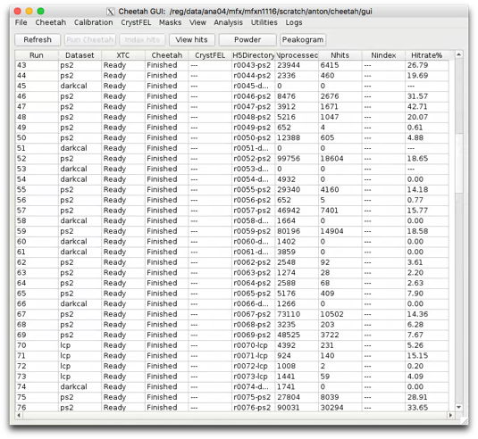
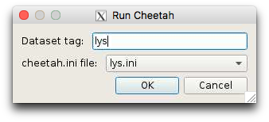
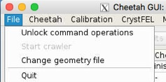
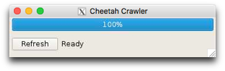
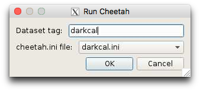

Cheetah GUI interface
To start the GUI from the command line simply type:
> cheetah-gui
The Cheetah GUI makes your data processing life simpler.
It consists of a table of runs used to coordinate processing and simplify the viewing and monitoring of output. Looking at your data is the first essential step in analysis so we try to make it as simple as possible. Similarly, processing multiple runs on the cluster becomes a matter of a few mouse clicks with current processing status updated in the table.
Cheetah output is in the form of portable, standardised HDF5 and plain text files. Viewers called from the GUI open and display these files. Data is grouped by run ID corresponding to one set of measurements. Careful selection of dataset labels means the table indicates what data goes together and to provide a convenient result database for the whole experiment. Processing can be automated but we find it useful to have a human think about and review the data before further processing - looking at your data almost always helps and never hurts so we aim to make that step as easy as possible.
The GUI uses a standard Anaconda python 3.x installation with PyQt5 and pyqtgraph and can be used to view and organise data coped home. To use it at home, copy the whole cheetah directory tree to a local server and run the gui locally. Modifying the wrapper scripts for your environment will turn it into a single command. The GUI itself spawns backend programs which can also be called directly from the command line if desired.

Configuring what Cheetah does is currently performed by editing the cheetah.ini file.
Look under Data processing for the range of options available.
The most common application is serial crystallography hit finding. For this there is a sample nanocrystal analysis file in process/lys.ini, and will look for Bragg peaks to find hits. Open this file and edit it.
In particular, change the line starting with “darkcal=” to point to the dark calibration file you just created. Or use the ‘current darkcal’ option in combination with the menu item mentioned above.

Select a run with data and click the “Run Cheetah” button and specify ‘lys.ini’ as the configuration file
(it is possible to select more than one run at a time).

And things should start to happen.
Once again jobs should appear in the batch queue
> bjobs -u all -q psfehq
690066 barty RUN psfehq psexport02 6*psana1311 r0001 Oct 23 07:3
If the crawler is running, the Cheetah status and number of processed frames should update periodically
Data should start to appear in the cheetah/hdf5 directory
If not, something is wrong and it’s time for debugging. In particular look at the output of hdf5/run0xxx/bsub.log.
The setup is now done and it’s time for optimisation of the output.
1. enabling command operations and starting the crawler
By default the GUI starts in a ‘do not destroy my data by accident’ mode whereby it is not possible to launch commands that may modify or delete data. This is deliberate. Activate command operations through the file menu.
Processing of data and updating of the GUI table as an experiment progresses requires the crawler to be started. This little process runs in the background gathering information on the status of XTC files available on disk and the progress of Cheetah jobs. It can overwrite the current table contents, and only one person should run this at any one time (even though many people can view the GUI at once).
To start the crawler it is first necessary to go
File->Unlock command operations
then
File->Start Crawler
Unlocking command operations enables the Crawler option and the “Run Cheetah” button. This step is deliberately added in order to force one to think before overwriting existing data.
A little window with the crawler should appear on screen. It should periodically do something and update the table. Look in the terminal for any errors.
2. Running jobs - a dark calibration file
This is also a good way to check that everythying is working.
The detector needs to be corrected for static offsets, often known as ‘dark frames’. Make sure to take one at the start of the experiment and every few hours during the experiment.
Click the “Run Cheetah” button and specify ‘darkcal.ini’ as the configuration file.
The job should now be go to the batch queue for processing.
Jobs should appear in the batch queue
> bjobs -u all -q psfehq
690066 barty RUN psfehq psexport02 6*psana1311 r0001 Oct 23 07:3
If the crawler is running, the Cheetah status and number of processed frames should update periodically
Data should start to appear in the cheetah/hdf5 directory
In particular, a file called r00xx-CxiDs1-darkcal.h5 should start to appear.
If not, something is wrong and it’s time for debugging
If all goes well, wait for the job to finish then copy the file r00xx-CxiDs1-darkcal.h5 into the cheetah/calib/darkcal directory.
Once the darkcal is finished running, create a bad pixel map from the darkcal using the Cheetah tools Cheetah->badpix from darkcal and save it in the cheetah/calib/masks directory.
A simple menu command exists to copy this over to the calib/darkcal directory once completed, and set it as the ‘current darkcal’.
3. Other analysis - parameters in the cheetah.ini file
5. sit back and enjoy your experiment (and a cup of tea)
Setup of the guI should now be done and it’s time to analyse some data.
A few hints:
-
1)Review your output. Often. Default parameters may work, or they may not. No analysis should ever be done completely blind. Use the ‘Show hits” button to look at images and refine the hit finding parameters.
-
2)It is convenient to start a new .ini file for each type of sample. The name of the .ini file is used by the GUI to tag runs and update the table, and ends up as the tag name on the HDF5 directories created. Separate names helps keep separate samples apart, and makes it easy to copy/tar/grep directories based on sample name or other experiment parameters. This helps keep data organised and will be of great benefit later on.
-
3)Nothing happening? Seems like your processing job never starts, and nothing is waiting in the batch queue?
Check the View->bsub.log file. This displays the log file from the batch submission process and likely will show some kind of error message. Common mistakes are an error in typing in the darkcal or mask file names.
4. Permissions housekeeping
Working on your own is easy. Working as a part of a group during an experiment involves setting up directory access permissions so that everyone can see and access the files.
Here’s a quick set of commands to give everyone in your experiment access to the data:
> chgrp -R {cxi12345} cheetah
> chmod -R g+w cheetah
> chmod -R g+s cheetah
where {cxi12345} should of course be replaced by your experiment name. We try to do this as a part of automated setup, but sometimes it doesn’t work as expected.


